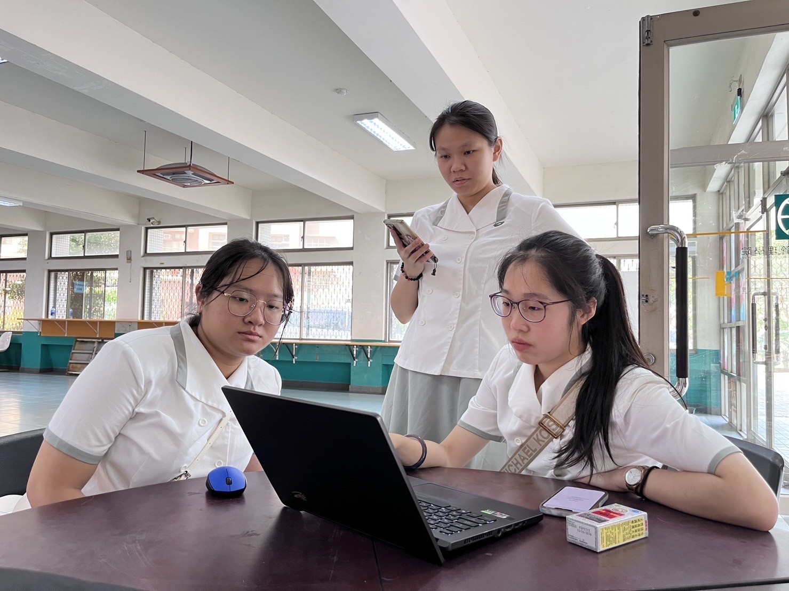
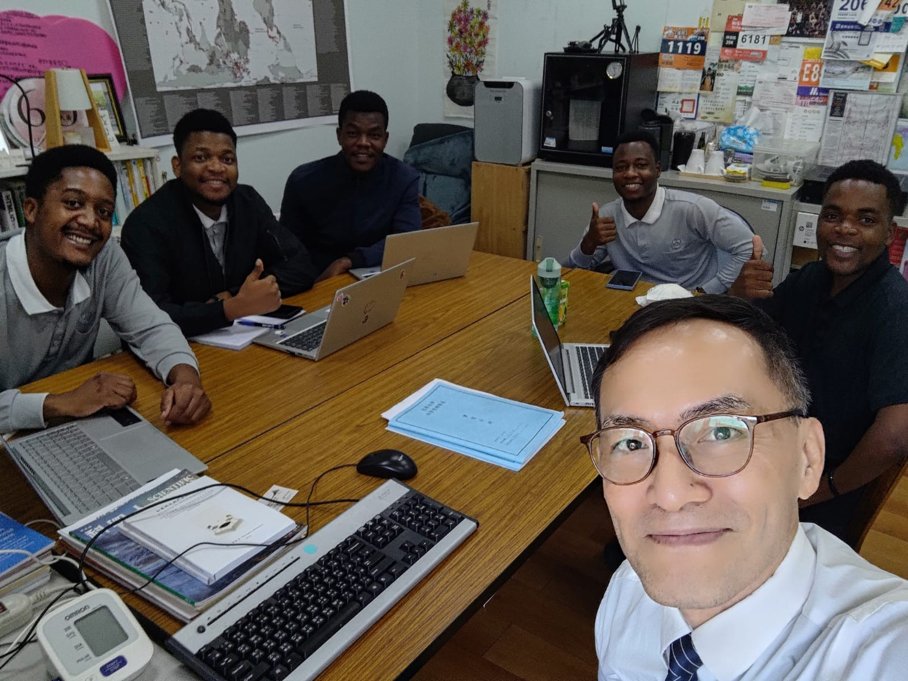
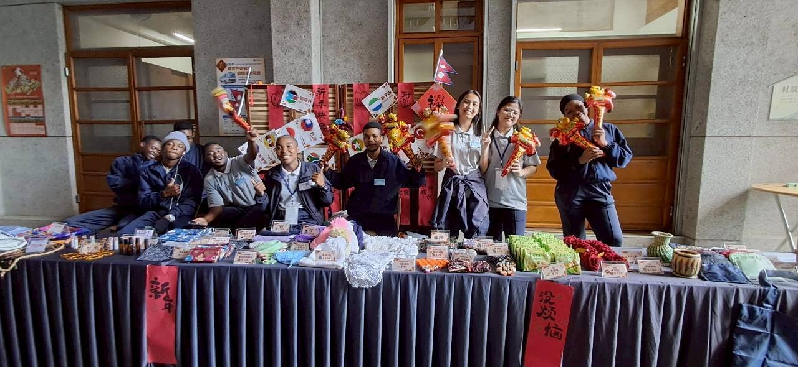
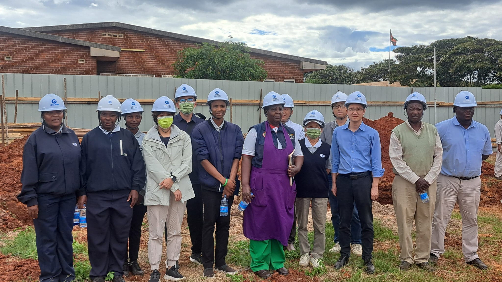

P102
TCU Campus Space
慈大空間查詢
TCU Campus Space
慈大空間查詢
DIGITAL & INTERACTIVE
TCU Campus Space（慈大空間查詢）
協助新生、訪客與校內成員快速查詢校園空間資訊，作為經營管理與空間服務設計的學生專題成果。
瀏覽作品（新分頁） →STUDENT ACHIEVEMENTS
從數位創作、課程專題、競賽到實習，呈現學生如何把所學帶進真實問題與實務場域。
這裡整理學生的數位作品、課程專題、競賽紀錄與實習經驗。每筆成果依內容型態呈現作品連結、照片或來源；學生姓名與照片公開方式，依本人及相關單位授權確認。
協助新生、訪客與校內成員快速查詢校園空間資訊，作為經營管理與空間服務設計的學生專題成果。
瀏覽作品（新分頁） →



照片呈現據點地圖與資料表整理成果；實習單位及資料可公開範圍待確認。

以工作情境照片呈現實習日常；具體任務與學生心得待核對後補充。

照片記錄義賣攤位與團隊活動；活動時間、主辦資訊與個人心得待確認。

照片呈現團隊前往建設場域的實地參訪；合作單位與實習心得待核實後補充。

照片記錄團隊在場域中聆聽說明與觀察；單位資訊及心得內容待確認。
培養專業力 × 提升就業力 × 實踐影響力

MOS 微軟 Office 專家認證。
TBSA 商務企劃能力初級檢定。
PMA 專案助理。
Google Ads 廣告認證。
淨零綠領人才培育課程證書。
| 級別 | 點數 | 證照／課程項目 |
|---|---|---|
| 基礎級 | 10 點 | 職場倫理認證；淨零綠領人才培育課程證書；EEC 企業電子化規劃師 |
| 進階級 | 15 點 | TBSA 商務企劃初階能力；TIMS 行銷企劃；企業倫理認證；顧客關係管理助理管理師 |
| 專業級 | 20 點 | PMA 專案助理；iPAS 品牌企劃師；iPAS 淨零碳規劃管理師；iPAS 營運智慧分析師 |
| 國際證照 | 10–20 點 | Google Ads 廣告認證；Adobe ACP 專家認證；MOS（Microsoft Office Specialist）微軟辦公室專家認證 |
專業知識力｜實務應用力｜職場競爭力｜永續影響力
級別、點數與項目依提供的證照規劃圖整理；證照與認證名稱依圖中文字轉錄。
本頁為 GH 內容審閱版本。照片、作品資訊與姓名標示，正式核定前仍須逐項完成本人及相關單位的公開授權確認；如需更正或撤下，請聯絡系辦。